Remote
Goodies
Channels
Settings
About
Remoku
Send
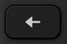
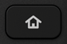
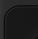
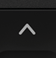
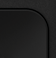
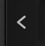
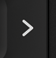
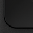
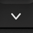
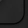
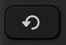
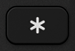
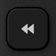
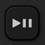
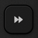
Remoku
Remoku has an update available.
Reload
to start using it.
192.168.1.102
Macros
Email
Home
Developer Screen
Dump Core
Secret Screen
Bit Rate Override
Channels Info
RepeatPlayWait
Launch Channel Store
Run
Save
Remove
See
help.remoku.tv
for macro command reference.
Shoutcast Channel
Station Name:
Station URL:
Launch Shoutcast
Channel Store
Focus App id:
Launch Channel Store
Refer to your
installed channels
for channel ids.
Launch Remoku Channel
Add launch parameter
=
Add
Remoku: Getting Started
Remoku is a web app for Roku Remote Control.
To get started, you can search for Rokus if you enter your network address range* below, then click the Scan button to look for Roku devices. Or, you can manually add the address of a Roku.
If the scan doesn't find any Rokus, please look for help at
help.remoku.tv
.
* For example:
192.168.1.X
. These numbers can be found within the Network Control Panel or Wifi Settings of most devices, and/or in your router manual.
Control This Roku
192.168.1.102
Name this roku:
Find My Roku
My Network:
.
.
. X
How Many Rokus?
1
2
3
4
5
6
7
8
9
10
11
12
13
14
15
Scan
Search Help
Manual Add:
+
Remove this:
192.168.1.102
-
Colors
Background Color: #
Foreground Color: #
Favorites
Show Favorites
Favorite 1:
Favorite 2:
Favorite 3:
Refer to your
installed channels
for channel ids.
Profile Management
Export Settings
Import Settings
Use this field to copy and paste settings for export and import.
Wipe Settings
Apps
First
Install Remoku Channel
Then
Launch Remoku Channel
Then
Load Channel List
Remoku
A web app for Roku remote control.
Get help with using Remoku at
help.remoku.tv
Version
Remoku
Stable Channel
Build Date: September 14, 2012 10:14:18 PM
Debug Output
Mozilla/5.0 (X11; Linux x86_64) AppleWebKit/537.36 (KHTML, like Gecko) Ubuntu Chromium/55.0.2883.87 Chrome/55.0.2883.87 Safari/537.36
Browser has localStorage support.
appCache: Checking
appCache: Error